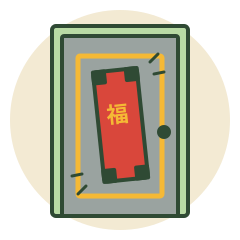

No.002
磁鐵貼春聯
家裡大門是金屬門，每年換春聯都留一堆殘膠，刮到手痠還刮不乾淨。
💡 神招做法
- 買黏貼式磁鐵片，貼在春聯背面的四個角。
- 直接吸上金屬大門，不用膠帶。
- 明年要換時拿下來就好，一秒換新、門上不留膠。
📎 出處：@ted_kan · 2026-02-16 · Threads 原貼文 ↗

家裡大門是金屬門，每年換春聯都留一堆殘膠，刮到手痠還刮不乾淨。
📎 出處：@ted_kan · 2026-02-16 · Threads 原貼文 ↗